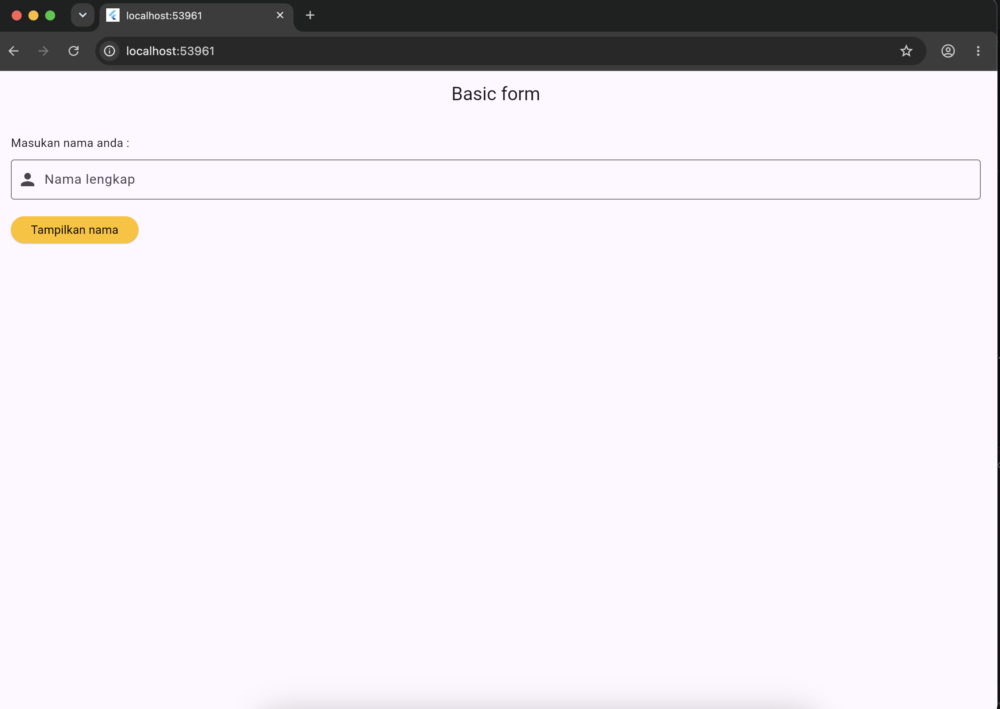
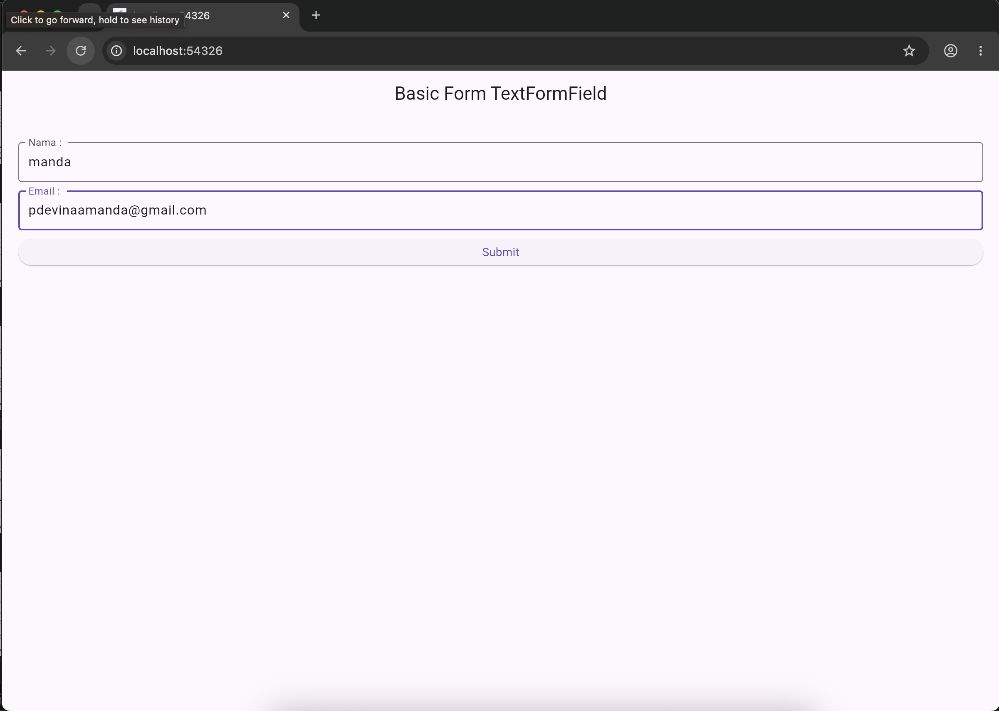
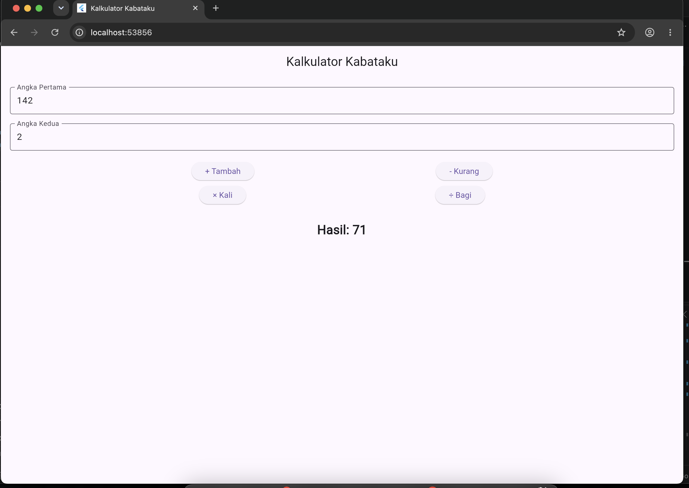

Basic Form & Kalkulator Flutter
Formulir atau form dalam pengembangan aplikasi mobile merupakan komponen krusial yang berfungsi sebagai media interaksi utama antara pengguna dan sistem. Melalui penggunaan widget seperti TextField dan TextFormField, pengembang dapat mengumpulkan berbagai masukan data dari pengguna, mulai dari teks biasa hingga data yang memerlukan validasi khusus secara langsung seperti format email atau kolom yang wajib diisi.
Selain pengelolaan masukan data, pengembangan antarmuka interaktif pada Flutter juga didukung oleh pemanfaatan state management lokal menggunakan StatefulWidget dan setState agar tampilan aplikasi dapat merespons perubahan data secara dinamis. Praktikum ini mengeksplorasi implementasi dasar form serta penerapan logika komputasi sederhana untuk membangun aplikasi fungsional seperti kalkulator berbasis mobile.
TextField dan TextFormField untuk menerima input data dari pengguna pada aplikasi Flutter.
GlobalKey<FormState> dan fungsi validator pada Flutter.
Berikut adalah tahapan-tahapan yang dilakukan dalam pembuatan dan pengujian program basic form menggunakan Flutter.
Tahap awal mencakup pembuatan antarmuka form sederhana menggunakan widget TextField untuk mengambil input teks langsung dari pengguna dan menampilkannya kembali melalui komponen interaktif.
lib/main.dart dengan mendefinisikan kelas aplikasi dan widget stateful untuk form. Baris kode di bawah ini digunakan untuk menginisialisasi pengendali teks (TextEditingController) agar nilai yang diketik pengguna dapat diambil:
final TextEditingController _textEditingController = TextEditingController();TextField(
controller: _textEditingController,
decoration: const InputDecoration(
labelText: 'Nama',
border: OutlineInputBorder(),
),
)ElevatedButton yang berfungsi untuk memicu pemanggilan data input dan menampilkan hasilnya melalui komponen SnackBar ketika tombol ditekan:
ElevatedButton(
onPressed: () {
String inputText = _textEditingController.text;
ScaffoldMessenger.of(context).showSnackBar(
SnackBar(content: Text('Nama anda adalah: $inputText')),
);
},
child: const Text('Submit'),
)
Tahap berikutnya melibatkan penggunaan TextFormField di dalam widget Form yang dilengkapi dengan kunci global (_formKey) guna mengevaluasi kelengkapan serta kevalidan data input pengguna.
GlobalKey dan controller khusus untuk mengontrol status validasi seluruh elemen form di dalam state class:
final _formKey = GlobalKey<FormState>();
final _nameController = TextEditingController();
final _emailController = TextEditingController();TextFormField, seperti memastikan kolom tidak kosong serta format email mengandung karakter '@':
validator: (value) {
if (value == null || value.isEmpty) {
return 'Masukkan email anda';
}
if (!value.contains('@')) {
return 'Email tidak valid';
}
return null;
}void _submitForm() {
if (_formKey.currentState!.validate()) {
String name = _nameController.text;
String email = _emailController.text;
ScaffoldMessenger.of(context).showSnackBar(
SnackBar(content: Text('Validasi $name, $email Berhasil'))
);
}
}TextFormField pada aplikasi:

Tahap akhir dari penugasan praktikum ini adalah membangun aplikasi kalkulator yang mampu menjalankan operasi aritmatika dasar (kali, bagi, tambah, kurang) menggunakan dua buah widget input angka dan tombol eksekusi.
final TextEditingController _angka1Controller = TextEditingController();
final TextEditingController _angka2Controller = TextEditingController();void _hitung(String operasi) {
double? angka1 = double.tryParse(_angka1Controller.text);
double? angka2 = double.tryParse(_angka2Controller.text);
if (angka1 == null || angka2 == null) return;
setState(() {
switch (operasi) {
case 'tambah': _hasil = (angka1 + angka2).toString(); break;
case 'kurang': _hasil = (angka1 - angka2).toString(); break;
case 'kali': _hasil = (angka1 * angka2).toString(); break;
case 'bagi': _hasil = (angka2 == 0) ? 'Error' : (angka1 / angka2).toString(); break;
}
});
}
Praktikum ini berhasil diselesaikan dengan mengimplementasikan konsep dasar pembuatan form pada Flutter, mulai dari penggunaan TextField sederhana hingga penerapan validasi data tingkat lanjut menggunakan TextFormField serta pemanfaatan GlobalKey. Seluruh komponen penunjang interaksi pengguna terintegrasi dengan baik untuk membangun antarmuka aplikasi yang responsif dan fungsional.